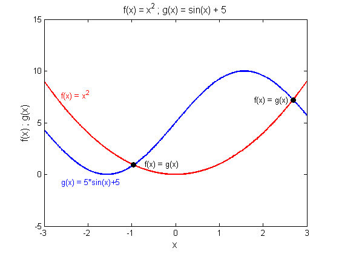

This is an example of how to add text to a plot in MATLAB®.
Read about the text function in the MATLAB® documentation.
Go to MATLAB Plot Gallery
% Define functions f = x^2 and g = 5*sin(x)+5 x = -3.0:0.01:3.0; f = x.^2; g = 5*sin(x) + 5; % Plot function f figure; plot(x, f, 'r-', 'LineWidth', 2); hold on; % Plot function g plot(x, g, 'b-', 'LineWidth', 2); axis([-3,3,-5,15]); % Add title and axis labels title('f(x) = x^2 ; g(x) = sin(x) + 5','FontSize',12); xlabel('x','FontSize',12); ylabel('f(x) ; g(x)','FontSize',12); % Label the curve for function f in red text(-2.6, 7.7, 'f(x) = x^2', 'Color', 'r'); % Label the curve for function g in blue text(-2.6, -0.75, 'g(x) = 5*sin(x)+5', 'Color', 'b'); % Put markers at the two points where the functions are equal xeq(1) = -0.956; yeq(1) = 0.916; xeq(2) = 2.685; yeq(2) = 7.207; plot(xeq, yeq, 'o', 'MarkerFaceColor', 'k', 'MarkerEdgeColor','k', ... 'LineWidth', 2, 'MarkerSize', 6); % Label the points where the curves are equal in black text(-0.7, 1 , 'f(x) = g(x)', 'Color', 'k'); text(1.8 , 7.2, 'f(x) = g(x)', 'Color', 'k');